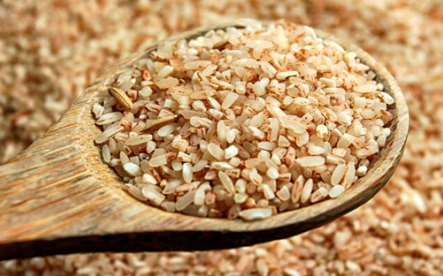

糙米的百科知识
糙米介绍
糙米，是指除了外壳之外都保留的全谷粒。即含有皮层、糊粉层和胚芽的米。由于口感较粗，质地紧密，煮起来也比较费时;但是糙米的营养价值比精白米高。与全麦相比，糙米的蛋白质含量虽然不多，但是蛋白质质量较好，主要是米精蛋白，氨基酸的组成比较完全，人体容易消化吸收，但赖氨酸含量较少，含有较多的脂肪和碳水化合物，短时间内可以为人体提供大量的热量。

糙米的营养价值
在我国粮油质量国家标准中，稻谷按其粒形和粒质分为三类： 第一类：籼稻谷，即籼型非糯性稻谷。根据粒质和收获季节又分为早籼稻谷和晚籼稻谷;第二类：粳稻谷，即粳型非糯性稻谷。根据粒质和收获季节又分为早粳稻谷和晚粳稻谷;第三类：糯稻谷，按其粒形和粒质分为籼糯稻谷和粳糯稻谷两类。稻谷经砻谷机脱去颖壳后即可得到糙米。
1.糙米有8种氨基酸、16种矿物质、21种维生素，它给人类的营养是完整的、全面的、天然的。糙米有所谓生命之源的胚芽。这种贵重的胚芽含有碳水化物、脂肪类、粗蛋白、纤维、维生素A、B1、B2、B6、尼古丁酸、叶酸、维生素E、各种的矿物质以及很重要的酵素类等。
2.糙米的最大特点是含有胚芽。胚芽是一种有生命的组织，含有丰富的营养。它在适当的环境中会发育成一颗植株。由此可见胚芽具有很高的营养价值。胚芽不仅含有丰富的B族维生素及维生素E、蛋白质和碳水化合物，而且还有大量的纤维素和不饱和脂肪酸。
3.锌在过去未引起人们的注意，现在发现人体内的80多种酶含有锌，因而锌被公认为人类饮食的必需成分。糙米中锌的含量为16.4mg/公斤，而精米仅有6mg/公斤。
糙米的食用效果
4.含有丰富的膳食纤维。
1.降低胆固醇
胚芽中的不饱和脂肪酸具有降低胆固醇，保护心脏的作用。
2.促进血液循环
胚芽中富含的维生素E能促进血液循环，有效维护全身机能。
3.治疗贫血
癌症患者中有贫血倾向的人很多，胚芽具有显著的血液性状的正常化作用，也具有血球增加作用，自然有明显的治疗贫血的效果。
4.有健脑的功能
人脑炎质中有65%是由各种脂肪酸组成的，其中又以不饱和脂肪酸最为重要，如果脑部摄取的不饱和脂肪酸过少，就会影响心智的发育。
5.减肥
日本研究证明，糙米饭的血糖指数比白米饭低得多，在吃同样数量时具有更好的饱腹感，有利于控制食量，从而帮助肥胖者减肥。因此，日本、韩国、新加坡等国家很早就掀起了吃糙米控制体重的热潮。
6.防癌的作用
糙米具有连接和分解农药等放射性物质的功效，从而有效的防止了体内吸收有害物质，达到了防癌的作用。
7.改善肠胃机能，净化血液
糙米中含有大量纤维素。而纤维素近年来已被证明具有减肥、降低胆固醇、通便等功能。因而糙米胚芽有改善肠胃机能、净化血液、预防便秘、肠癌及肥胖，帮助新陈代谢及排毒等作用。
8.孩子多吃糙米蔬菜防过敏
相当多的孩子被皮炎、湿疹等过敏性疾病所困扰。研究发现，这些孩子之所以易受皮炎之苦，与食物选择不当有关。糙米、蔬菜则不同，所供养的红细胞生命力强，又无异体蛋白进入血流，故能防止上述过敏性皮肤病的发生。
9.对糖尿病患者有益
糙米的食用禁忌
糙米中的锌、铬、锰、钒等微量元素有利于提高胰岛素的敏感性，对糖耐量受损的人很有帮助。
胃肠消化不好的人慎食。
 上一篇
上一篇